Machine Learning Summer School
Lecture 3: Learning parameters and structure
Zoubin Ghahramani
zoubin@eng.cam.ac.uk
http://learning.eng.cam.ac.uk/zoubin/
Department of Engineering
University of Cambridge, UK
Machine Learning Department
Carnegie Mellon University, USA
August 2009



Learning parameters
x1
x
θ
2
2
x2
0.2
0.3
0.5
x
x
3
1
x4
0.1
0.6
0.3
p(x1)p(x2|x1)p(x3|x1)p(x4|x2)
Assume each variable xi is discrete and can take on Ki values.
The parameters of this model can be represented as 4 tables: θ1 has K1 entries, θ2 has
K1 × K2 entries, etc.
These are called conditional probability tables (CPTs) with the following semantics:
p(x1 = k) = θ1,k
p(x2 = k0|x1 = k) = θ2,k,k0
If node i has M parents, θi can be represented either as an M + 1 dimensional table, or as
�
�
a 2-dimensional table with
Q
K
× K
j∈pa(i)
j
i entries by collapsing all the states of the
parents of node i. Note that Pk0 θi,k,k0 = 1.
Assume a data set D = {x(n)}N
.
How do we learn θ from D?
n=1


x1
Learning parameters
x2
x3
x
Assume a data set D = {x(n)}N
. How do we learn θ from D?
4
n=1
p(x|θ) = p(x1|θ1)p(x2|x1, θ2)p(x3|x1, θ3)p(x4|x2, θ4)
Likelihood:
N
Y
p(D|θ) =
p(x(n)|θ)
n=1
Log Likelihood:
N
X X
(n)
(n)
log p(D|θ) =
log p(x
|x
, θ
i
pa(i)
i)
n=1
i
This decomposes into sum of functions of θi. Each θi can be optimized separately:
ˆ
ni,k,k0
θi,k,k0 = P
k00 ni,k,k00
where ni,k,k0 is the number of times in D where xi = k0 and xpa(i) = k, where k represents
a joint configuration of all the parents of i (i.e. takes on one of Q
K
j∈pa(i)
j values)
x
n
x
2
θ
2
2
2
2
3
0
0.4
0.6
0
x
x
1
1
⇒
ML solution: Simply calculate frequencies!
3
1
6
0.3
0.1
0.6


Deriving the Maximum Likelihood Estimate
x
Y
δ(x,k)δ(y,`)
p(y|x, θ) =
θk,`
k,`
θ
y
Dataset D = {(x(n), y(n)) : n = 1 . . . , N }
Y
L(θ)
=
log
p(y(n)|x(n), θ)
n
Y Y
δ(x(n),k)δ(y(n),`)
=
log
θk,`
n
k,`
X
=
δ(x(n), k)δ(y(n), `) log θk,`
n,k,`
!
X
X
X
=
δ(x(n), k)δ(y(n), `)
log θk,` =
nk,` log θk,`
k,`
n
k,`
Maximize L(θ) w.r.t. θ subject to P θ
`
k,` = 1 for all k.
Maximum Likelihood Learning with Hidden Variables
θ1
X1
θ2
θ3
X
Assume
a
model
parameterised
by
θ
with
2
X3
observable variables Y and hidden variables X
θ4 Y
Goal: maximize parameter log likelihood given observed data.
X
L(θ) = log p(Y |θ) = log
p(Y, X|θ)
X
Maximum Likelihood Learning with Hidden Variables:
The EM Algorithm
θ1
X1
Goal: maximise parameter log likelihood given observables.
θ2
θ3
X
X2
X3
L(θ) = log p(Y |θ) = log
p(Y, X|θ)
X
θ4 Y
The Expectation Maximization (EM) algorithm (intuition):
Iterate between applying the following two steps:
• The E step: fill-in the hidden/missing variables
• The M step: apply complete data learning to filled-in data.
Maximum Likelihood Learning with Hidden Variables:
The EM Algorithm
Goal: maximise parameter log likelihood given observables.
X
L(θ) = log p(Y |θ) = log
p(Y, X|θ)
X
The EM algorithm (derivation):
X
p(Y, X|θ)
X
p(Y, X|θ)
L(θ)
=
log
q(X)
≥
q(X) log
= F (q(X), θ)
q(X)
q(X)
X
X
• The E step: maximize F (q(X), θ[t]) wrt q(X) holding θ[t] fixed:
q(X) = p(X|Y, θ[t])
• The M step: maximize F (q(X), θ) wrt θ holding q(X) fixed:
X
θ[t+1] ← argmax
q(X) log p(Y, X|θ)
θ
X
The E-step requires solving the inference problem, finding the distribution over the hidden
variables p(X|Y, θ[t]) given the current model parameters. This can be done using belief
propagation or the junction tree algorithm.
Maximum Likelihood Learning without and with Hidden Variables
ML Learning with Complete Data (No Hidden Variables)
Log likelihood decomposes into sum of functions of θi. Each θi can be optimized separately:
ˆ
nijk
θijk ← P
k0 nijk0
where nijk is the number of times in D where xi = k and xpa(i) = j.
Maximum likelihood solution: Simply calculate frequencies!
ML Learning with Incomplete Data (i.e. with Hidden Variables)
Iterative EM algorithm
E step: compute expected counts given previous settings of parameters E[nijk|D, θ[t]].
M step: re-estimate parameters using these expected counts
[t+1]
E[nijk|D, θ[t]]
θ
←
ijk
P
k0 E[nijk0|D, θ[t]]
Bayesian Learning
Apply the basic rules of probability to learning from data.
Data set: D = {x1, . . . , xn}
Models: m, m0 etc.
Model parameters: θ
Prior probability of models: P (m), P (m0) etc.
Prior probabilities of model parameters: P (θ|m)
Model of data given parameters (likelihood model): P (x|θ, m)
If the data are independently and identically distributed then:
n
Y
P (D|θ, m) =
P (xi|θ, m)
i=1
Posterior probability of model parameters:
P (D|θ, m)P (θ|m)
P (θ|D, m) =
P (D|m)
Posterior probability of models:
P (m)P (D|m)
P (m|D) =
P (D)
Bayesian parameter learning with no hidden variables
(n)
(n)
Let nijk be the number of times (x
= k and x
= j) in D.
i
pa(i)
For each i and j, θij· is a probability vector of length Ki × 1.
Since xi is a discrete variable with probabilities given by θi,j,·, the likelihood is:
Y Y
(n)
(n)
Y Y Y
n
p(D|θ) =
p(x
|x
, θ) =
θ ijk
i
pa(i)
ijk
n
i
i
j
k
If we choose a prior on θ of the form:
Y Y Y
α
p(θ) = c
θ ijk−1
ijk
i
j
k
where c is a normalization constant, and P θ
k
ijk = 1 ∀i, j, then the posterior distribution
also has the same form:
Y Y
˜
α
p(θ|D) = c0 Y
θ ijk−1
ijk
i
j
k
where ˜
αijk = αijk + nijk.
This distribution is called the Dirichlet distribution.
Dirichlet Distribution
The Dirichlet distribution is a distribution over the K-dim probability simplex.
Let θ be a K-dimensional vector s.t. ∀j : θj ≥ 0 and PK θ
j=1
j = 1
Γ(P α
K
def
j
j ) Y
α
p(θ|α) = Dir(α
j −1
1, . . . , αK ) =
θ
Q
Γ(α
j
j
j ) j=1
where the first term is a normalization constant1 and E(θj) = αj/(P α
k
k)
The Dirichlet is conjugate to the multinomial distribution. Let
x|θ ∼ Multinomial(·|θ)
That is, p(x = j|θ) = θj. Then the posterior is also Dirichlet:
p(x = j|θ)p(θ|α)
p(θ|x = j, α) =
= Dir( ˜
α)
p(x = j|α)
where ˜
αj = αj + 1, and ∀` 6= j : ˜
α` = α`
1Γ(x) = (x − 1)Γ(x − 1) = R ∞ tx−1e−tdt. For integer n, Γ(n) = (n − 1)!
0


Dirichlet Distributions
Examples of Dirichlet distributions over θ = (θ1, θ2, θ3) which can be plotted in 2D since
θ3 = 1 − θ1 − θ2:

Example
Assume αijk = 1 ∀i, j, k.
This corresponds to a uniform prior distribution over parameters θ. This is not a very
strong/dogmatic prior, since any parameter setting is assumed a priori possible.
After observed data D, what are the parameter posterior distributions?
p(θij·|D) = Dir(nij· + 1)
This distribution predicts, for future data:
nijk + 1
p(xi = k|xpa(i) = j, D) = P
k0(nijk0 + 1)
Adding 1 to each of the counts is a form of smoothing called “Laplace’s Rule”.
Bayesian parameter learning with hidden variables
Notation: let D be the observed data set, X be hidden variables, and θ be model
parameters. Assume discrete variables and Dirichlet priors on θ
Goal: to infer p(θ|D) = P p(X , θ|D)
X
Problem: since (a)
X
p(θ|D) =
p(θ|X , D)p(X |D),
X
and (b) for every way of filling in the missing data, p(θ|X , D) is a Dirichlet distribution,
and (c) there are exponentially many ways of filling in X , it follows that p(θ|D) is a mixture
of Dirichlets with exponentially many terms!
Solutions:
• Find a single best (“Viterbi”) completion of X (Stolcke and Omohundro, 1993)
• Markov chain Monte Carlo methods
• Variational Bayesian (VB) methods (Beal and Ghahramani, 2003)
Summary of parameter learning
Complete (fully observed) data
Incomplete (hidden /missing) data
ML
calculate frequencies
EM
Bayesian
update Dirichlet distributions
MCMC / Viterbi / VB
• For complete data Bayesian learning is not more costly than ML
• For incomplete data VB ≈ EM time complexity
• Other parameter priors are possible but Dirichlet is pretty flexible and intuitive.
• For non-discrete data, similar ideas but generally harder inference and learning.
Structure learning
Given a data set of observations of (A, B, C, D, E) can we learn the structure of the
graphical model?
A
B
A
B
A
B
A
B
C
C
C
C
D
D
D
D
E
E
E
E
Let m denote the graph structure = the set of edges.
Structure learning
A
B
A
B
A
B
A
B
C
C
C
C
D
D
D
D
E
E
E
E
Constraint-Based Learning:
Use statistical tests of marginal and conditional
independence. Find the set of DAGs whose d-separation relations match the results of
conditional independence tests.
Score-Based Learning: Use a global score such as the BIC score or Bayesian marginal
likelihood. Find the structures that maximize this score.
Score-based structure learning for complete data
Consider a graphical model with structure m, discrete observed data D, and parameters θ.
Assume Dirichlet priors.
The Bayesian marginal likelihood score is easy to compute:
Z
score(m) = log p(D|m) = log
p(D|θ, m)p(θ|m)dθ
"
#
X X
X
X
X
X
score(m) =
log Γ(
αijk) −
log Γ(αijk) − log Γ(
˜
αijk) +
log Γ( ˜
αijk)
i
j
k
k
k
k
where ˜
αijk = αijk + nijk. Note that the score decomposes over i.
One can incorporate structure prior information p(m) as well:
score(m) = log p(D|m) + log p(m)
Greedy search algorithm: Start with m. Consider modifications m → m0 (edge deletions,
additions, reversals). Accept m0 if score(m0) > score(m). Repeat.
Bayesian inference of model structure: Run MCMC on m.
Bayesian Structural EM for incomplete data
Consider a graphical model with structure m, observed data D, hidden variables X and
parameters θ
The Bayesian score is generally intractable to compute:
Z
X
score(m) = p(D|m) =
p(X , θ, D|m)dθ
X
Bayesian Structure EM (Friedman, 1998):
1. compute MAP parameters ˆ
θ for current model m using EM
2. find hidden variable distribution p(X |D, ˆ
θ)
3. for a small set of candidate structures compute or approximate
X
score(m0) =
p(X |D, ˆ
θ) log p(D, X |m0)
X
4. m ← m0 with highest score
Directed Graphical Models and Causality
Causal relationships are a fundamental component of cognition and scientific discovery.
Even though the independence relations are identical, there is a causal difference between
• “smoking” → “yellow teeth”
• “yellow teeth” → “smoking”
Key idea: interventions and the do-calculus:
p(S|Y = y) 6= p(S|do(Y = y))
p(Y |S = s) = p(Y |do(S = s))
Causal relationships are robust to interventions on the parents.
The key difficulty in learning causal relationships from observational data is the presence
of hidden common causes:
H
A
B
A
B
A
B
Learning parameters and structure in undirected graphs
A
B
A
B
C
C
D
D
E
E
p(x|θ) =
1
Q
g
; θ
Q
g
; θ
Z(θ)
j
j (xCj
j ) where Z (θ) = Px
j
j (xCj
j ).
Problem: computing Z(θ) is computationally intractable for general (non-tree-structured)
undirected models.
Therefore, maximum-likelihood learning of parameters is generally
intractable, Bayesian scoring of structures is intractable, etc.
Solutions:
• directly approximate Z(θ) and/or its derivatives (cf. Boltzmann machine learning;
contrastive divergence; pseudo-likelihood)
• use approx inference methods (e.g. loopy belief propagation, bounding methods, EP).
See: (Murray and Ghahramani, 2004; Murray et al, 2006) for Bayesian learning in undirected models.
Summary
• Parameter learning in directed models:
– complete and incomplete data;
– ML and Bayesian methods
• Structure learning in directed models: complete and incomplete data
• Causality
• Parameter and Structure learning in undirected models
Readings and References
• Beal, M.J. and Ghahramani, Z. (2006) Variational Bayesian learning of directed graphical models with
hidden variables. Bayesian Analysis 1(4):793–832.
http://learning.eng.cam.ac.uk/zoubin/papers/BeaGha06.pdf
• Friedman, N. (1998) The Bayesian structural EM algorithm.
In Uncertainty in Artificial Intelligence
(UAI-1998). http://robotics.stanford.edu/ nir/Papers/Fr2.pdf
• Friedman, N. and Koller, D. (2003) Being Bayesian about network structure. A Bayesian approach to
structure discovery in Bayesian networks. Machine Learning. 50(1): 95–125.
http://www.springerlink.com/index/NQ13817217667435.pdf
• Ghahramani, Z. (2004) Unsupervised Learning. In Bousquet, O., von Luxburg, U. and Raetsch, G.
Advanced Lectures in Machine Learning. 72-112.
http://learning.eng.cam.ac.uk/zoubin/papers/ul.pdf
• Heckerman, D. (1995) A tutorial on learning with Bayesian networks. In Learning in Graphical Models.
http://research.microsoft.com/pubs/69588/tr-95-06.pdf
• Murray, I.A., Ghahramani, Z., and MacKay, D.J.C. (2006) MCMC for doubly-intractable distributions. In
Uncertainty in Artificial Intelligence (UAI-2006).
http://learning.eng.cam.ac.uk/zoubin/papers/doubly intractable.pdf
• Murray, I.A. and Ghahramani, Z. (2004) Bayesian Learning in Undirected Graphical Models: Approximate
MCMC algorithms. In Uncertainty in Artificial Intelligence (UAI-2004).
http://learning.eng.cam.ac.uk/zoubin/papers/uai04murray.pdf
• Stolcke, A. and Omohundro, S. (1993) Hidden Markov model induction by Bayesian model merging. In
Advances in Neural Information Processing Systems (NIPS).
http://omohundro.files.wordpress.com/2009/03/stolcke omohundro93 hmm induction bayesian model merging.pdf